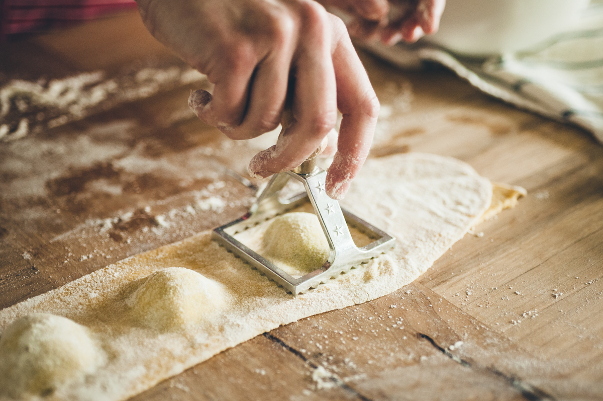

Homemade Arugula Pesto Ravioli
MARCH 07, 2018
We have an abundance of arugula in our garden. We don’t have much else in there right now in these cold winter months but our arugula pushes on, always persevering and refusing to stop growing. When it gets hard to manage, I make pesto. We go outside and pick as much of it as we can, knowing the food processor can handle it. Feeling inspired to make arugula pesto led to feeling inspired to make homemade ravioli. Here was our process (with a 15 month old):
First step, head outside to harvest some arugula. Put some in the colander, have your 15 month old throw it back in the garden, repeat. I’m pretty sure she’s thinking “the arugula belongs in the garden mama.” My little nature-loving girl…